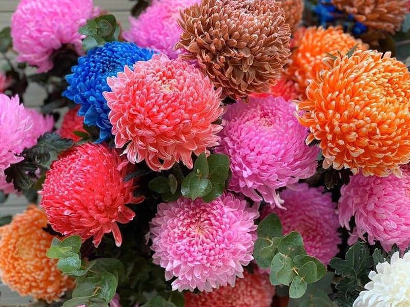
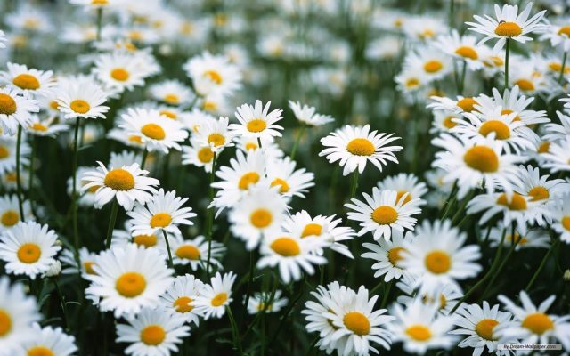

HOA CÚC
- Lịch sử
Hoa cúc (Chrysanthemum sp) được định nghĩa từ Chrysos (màu vàng) và Anthemum (hoa) bởi Line vào năm 1753, là một trong những cây cảnh lâu đời nhất và quan trọng nhất trên thế giới. Hoa cúc có nguồn gốc từ Trung Quốc và Nhật Bản, các nhà khảo cổ Trung Quốc đã chứng minh rằng cuộc đời của Khổng Tử người sử dụng để ăn mừng chiến thắng cúc cúc và đi vào các bức tranh, tác phẩm điêu khắc từ đó. Ở Nhật Bản, hoa cúc là một bông hoa bạn (quốc hoa) thường được sử dụng trong các nghi lễ quan trọng, người dân Nhật Bản coi hoa cúc là tâm (Dang Van Dong et al, 2003)

Hoa cúc ở Việt Nam đã được giới thiệu từ thế kỷ XV, các Việt Nam được coi là một biểu hiện của hoa cúc thanh cao, là một trong bốn loài thảo mộc "Tùng, Cúc, Trúc Mai" hay "Mai, Thái Lan, tre được phân loại như một tứ quý , hoa cúc ". (Trương Hữu Tuyên, 1979). Hoa cúc không chỉ được ưa chuộng bởi màu sắc, hình dạng, mà còn đặc điểm bền hơn các loại hoa khác.
- Tổng quát
Hoa Cúc được gọi chung bằng Chrysanthemum (hoặc mums hay chrysanths) hoặc Pyrethrum hoặc Dendranthema. Tancetum, là loại cây lâu năm trong họ Asteraceae – tên tiếng Việt là Cúc, Đại cúc Cúc hay Cúc đóa.
Loài này có phân bổ rộng lớn: Châu Âu, Bắc Phi, Trung Cận Đông sang tới Trung Quốc, Việt Nam. Tại nước ta, Cúc được trồng quanh năm. Hoa cúc ngoài giá trị thưởng ngoạn, cúc còn có giá trị thực dụng như dùng để ăn, pha trà, ướp trà hương cúc hoặc chế thành trà cúc hay được pha chế thành rượu cúc. Hoa cúc vừa có ý nghĩa về cả mặt nghệ thuật và y học. Hoa có thể cắm bình, lọ, bát hoặc trồng trong bồn chậu để trang trí. Dược liệu từ hoa Cúc chữa bệnh nhức đầu, đau mắt, bệnh ban đỏ ngoài da… Các loài hoa Cúc quý nhất trong khoảng 4000 loài Cúc có tác dụng hữu ích làm dược liệu trong cuộc sống con người là 5 loài Cúc: Cúc trừ trùng; Cúc hoa vàng; Cúc hoa trắng; Cúc hạ sốt và Cúc ngải.
Đặc điểm nổi bật của hoa Cúc:
- Đặc trưng phổ biến và chung nhất của các loài này là trong cách nói thông thường gọi là “hoa”, là cụm hoa hay cụm hoa hình đầu (đúng ra là hoa hình giỏ (lam trạng hoa tự); là một cụm dày dặc của nhiều hoa nhỏ, thông thường gọi là các chiếc hoa (nghĩa là “các hoa nhỏ”).
- Các loài trong họ Cúc thông thường có một hoặc cả hai loại hoa con. Vòng ngoài của cụm hoa hình đầu tương tự như ở hoa hướng dương được cấu thành từ các hoa con có dạng cánh hoa dài, được gọi là lưỡi bẹ; chúng là hoa tia. Phần bên trong của đầu cụm hoa (hay đĩa) được hợp thành từ các hoa nhỏ với các cánh hoa hình ống; chúng là các hoa đĩa hay hoa phễu hoặc hoa ống. Thành phần của các hoa họ Cúc dao động từ hoa toàn tia (tương tự như ở các loài bồ công anh, chi Taraxacum) tới hoa toàn đĩa (tương tự như ở các loài cỏ dứa).
- Bản chất hỗn hợp của các cụm hoa của các loài thực vật này đã làm cho các nhà phân loại học thời kỳ đầu gọi họ này là họ Compositae (từ chữ composit – nghĩa là kép, hợp, phức).

-
Một số loại hoa cúc:
- Giá trị và công dụng cây hoa cúc
Hoa cúc có ứng dụng trọng trang trí cảnh quan, làm đẹp cho mọi không gian. Mặt khác hoa cúc là một thảo dược thanh nhiệt rất tốt. Đặc biệt các chế phẩm từ hoa cúc như trà hoa cúc, hoa cúc khô luôn là một trong những vị thuốc chữa bệnh trong gia đình dân gian Việt.